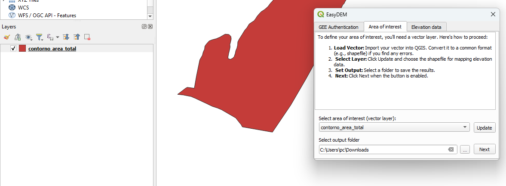
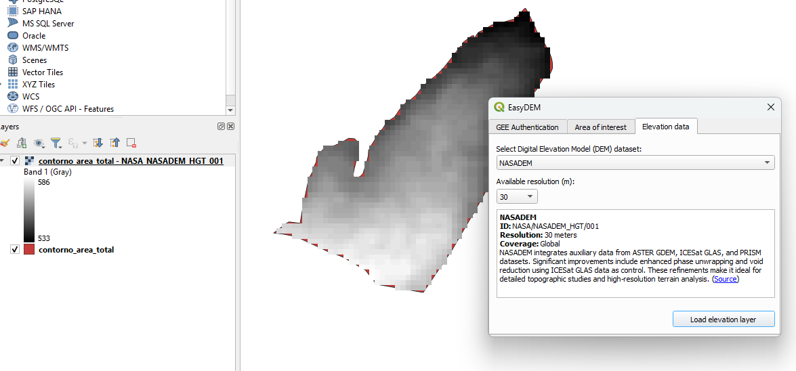

About EasyDEM
EasyDEM is a powerful QGIS plugin that enables you to easily access and download multiple Digital Elevation Models (DEMs) from Google Earth Engine. With a seamless integration into QGIS, you can quickly visualize and analyze topography from datasets such as NASADEM, ASTER GED, COPERNICUS DEM, JAXA ALOS, and USGS GMTED2010.
Features
- Access Multiple DEM Datasets: Quickly access and visualize various DEM datasets from GEE catalogs including:
- Seamless Integration: Load DEM data directly into QGIS with a few clicks.
- User-Friendly Interface: Easy-to-follow setup and step-by-step guide to get started.
Installation
Via QGIS Plugin Manager
- Open QGIS.
- Navigate to
Plugins > Manage and Install Plugins. - Search for EasyDEM.
- Click Install.
- Restart QGIS to activate the plugin.
Once installed, access DEM data by opening the plugin toolbar or icon, authenticating your Google Earth Engine (GEE) account, choosing your Area of Interest (vector layer) and output folder, and selecting your desired DEM dataset.
Step-by-Step Guide
-
Initial Setup:

- Area of Interest Selection: 
- DEM Dataset Selection: 
Download EasyDEM
Get the latest version of EasyDEM directly from the QGIS Plugin Manager or download the packaged version below.
Download EasyDEMSample Code Snippet
# Example: Authenticate and load DEM data using EasyDEM
import ee
ee.Authenticate()
ee.Initialize()
# Access a DEM dataset
dem = ee.Image("COPERNICUS/DEM/GLO30")
print("DEM loaded successfully!")